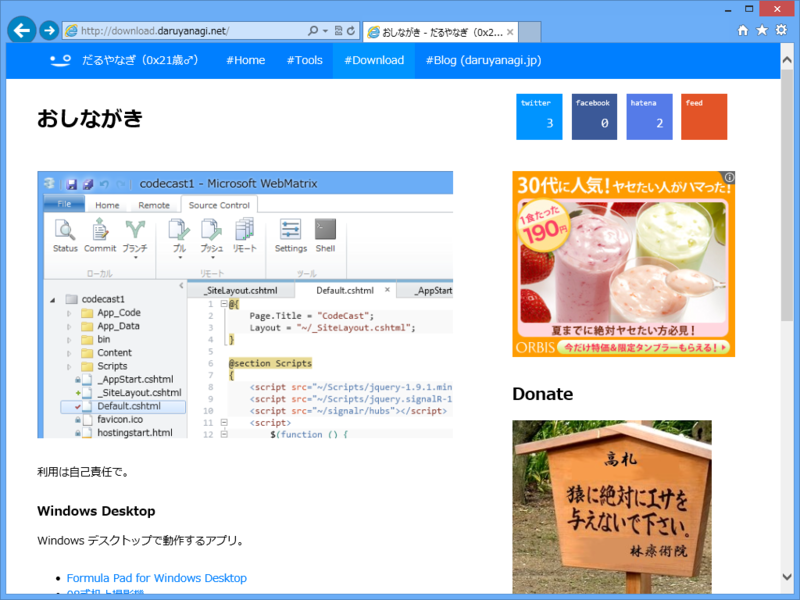
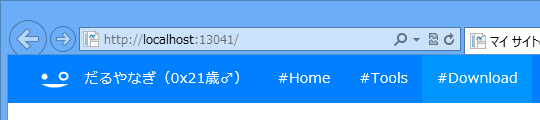

少しずつ Web サイトのリニューアルをしていきます。
公開日：

まずはここから。
仕組み的には Markdown テキストを App_Text フォルダに入れておいて、それを HTML に変換しています。Helper でプラグインっぽく拡張できるのがちょっと自慢。
ソーシャル関連のボタンは、この一連の記事で実装してみたものを使っています。
- WebMatrix 3: フィードの購読者数を取得する（1：サーバーサイド編） - だるろぐ
- WebMatrix 3: フィードの購読者数を取得する（2: JavaScript 編） - だるろぐ
- WebMatrix 3: フィードの購読者数を取得する（3: CSS 編） - だるろぐ
- WebMatrix 3: JSON と JSONP - だるろぐ
フィードの出力は以下の記事で実装したものをベースにしています。
今のところキャッシュ機能がないのでそれをつけようかなぁ、と。それ以外にも不満な部分が結構あるので、このサイトで十分に基本機能を練って NuGet パッケージにし、ほかのサイトにも展開していきたいと思います。
WordPress のような既存の大規模 CMS を使うのもいいけど、自分で少しずつ実装した方が“自分の手のひらの上で動かしている”感じがあって僕は好きです。
Windows Azure Web Sites を使って Dropbox からデプロイできたら便利そうなのだけど、ボクのお給料では Azure の維持は少し大変そうなので泣く泣く断念しました。おちんぎんほしぃなりぃ。
P.S.

ロゴ、イケてない？